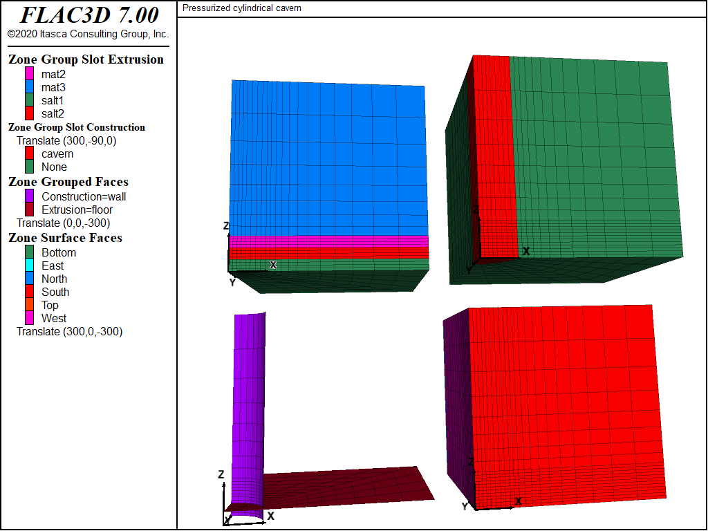
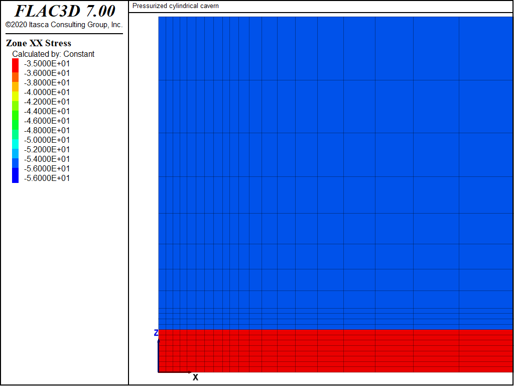
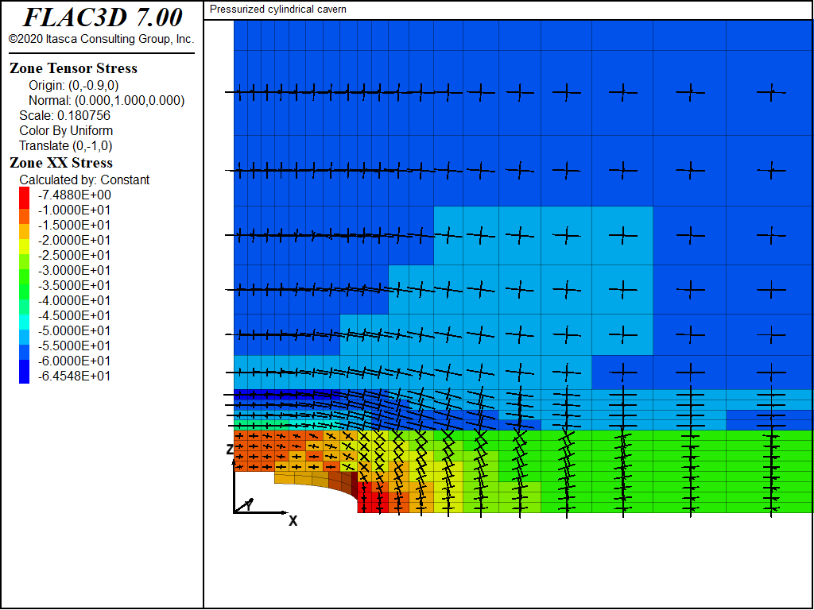
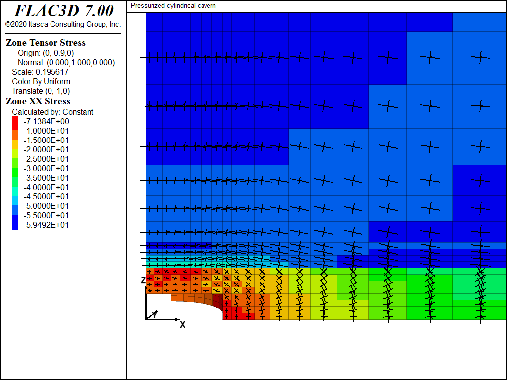
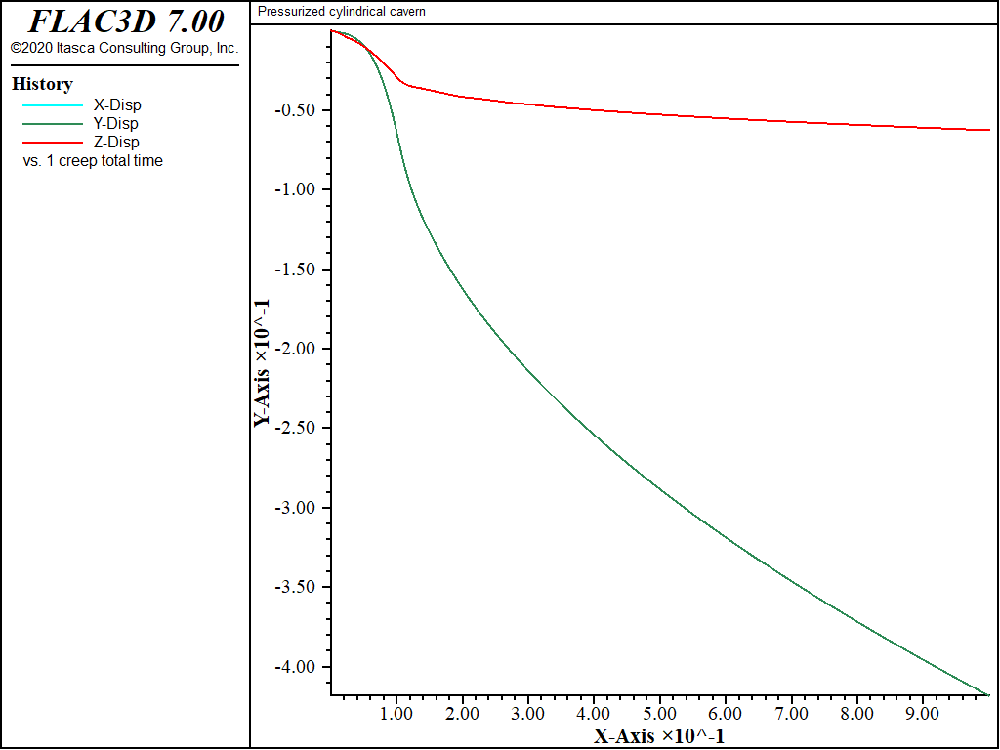
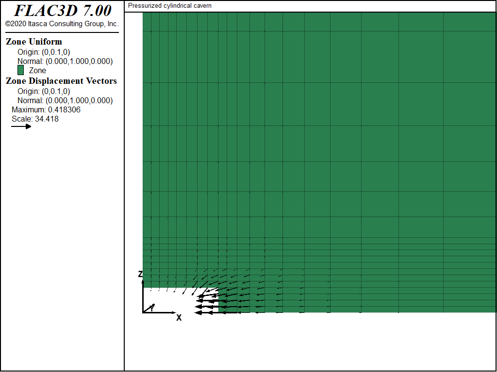
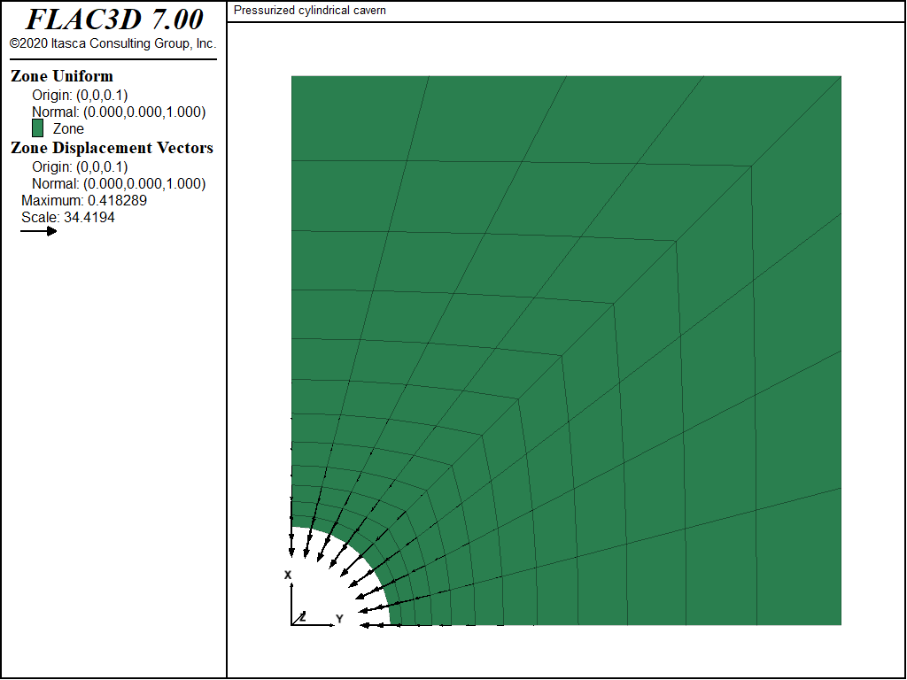

承压圆柱形洞室
问题描述
注意
本示例的项目文件可在 FLAC3D 中查看/运行。[1] 该项目的主数据文件见本示例末尾（main data file）。
在层状盐层中开挖一个承压圆柱形洞室。[2] 盐层上下两侧均为厚 15 m 的刚性弹性材料层（材料 2）。远场原位应力状态为各向异性。分析的目标是确定洞室的闭合量以及材料 2 中沿盐层接触面处应力状态的变化。
盐层厚 60 m，并假定在水平方向无限延伸。圆柱形洞室直径为 90 m、高 30 m，位于盐层中部（即洞室顶、底与刚性弹性层之间各存在 15 m 厚的盐层）。
远场原位应力状态为（压应力为负）：
\(σ_{xx}\) = -56 MPa（东西向）
\(σ_{yy}\) = -28 MPa（南北向）
\(σ_{zz}\) = -35 MPa（竖直向）
盐表现出以单组分幂律为特征的蠕变行为。盐、刚性弹性层（材料 2）和上覆岩层（材料 3）的岩体性质汇总于表 1（Table 1）。
| 盐 | 材料 2 | 材料 3 | |
|---|---|---|---|
| 弹性性质： | |||
| 杨氏模量（psi） | 10e6 | 30e6 | 10e6 |
| 杨氏模量（MPa） | 68.9475 | 206.8428 | 68.9475 |
| 泊松比 | 0.3 | 0.3 | 0.3 |
| 蠕变性质： | |||
| A | 3.9 × 10-7 MPa-4.9 yr-1 | ||
| n | 4.9 |
建模步骤
FLAC3D 模型使用 2D Extruder 窗格构建，以 \(z\) 轴作为圆柱形洞室的旋转轴。由于问题几何和应力状态的各向异性，\(xy\) 平面为对称面。图 （Figure）Figure #cavern-grid0 给出了本问题的 FLAC3D 网格。由于对称条件，仅模拟洞室的八分之一。图中四个网格图形中的三个显示了在挤出器中交互指定的各种分组。右下角的最后一个网格显示了使用 zone face skin 命令指定的面分组。
\(x\) = 0、\(y\) = 0 和 \(z\) = 0 的平面为对称面，采用滚动边界条件。位于 \(x\) = 250 m 的远场边界在 \(x\) 方向固定，位于 \(y\) = 250 m 的边界在 \(y\) 方向固定。在顶部边界（\(z\) = 250 m）施加 -35 MPa 的竖向应力。模型承受如下初始原位应力状态：\(σ_{xx}\) = -56 MPa、\(σ_{yy}\) = -28 MPa、\(σ_{zz}\) = -35 MPa。本分析不考虑重力应力梯度。
洞室将在 0.1 年的时间内开挖完成。开挖通过将沿洞室周边施加的法向压力在 0.1 年后由原位应力值降低到 7 MPa 来模拟。随后压力在总计 1 年的时间内保持为 7 MPa 不变。
本分析分为三个阶段。在第一阶段，使模型达到开挖前的应力状态，该状态被认为与远场原位应力以及盐所假定的蠕变行为相协调。在第二阶段，使用表格 load 将洞壁处的压力在 0.1 年内由初始应力状态线性降低到 7 MPa，以此模拟洞室开挖。最后，在第三阶段，跟踪模型的蠕变响应，总时间为 1 年。


图 1：盐层中承压圆柱形洞室的 FLAC3D 网格。
讨论
即使没有开挖，盐在施加的各向异性应力场下也会发生蠕变。这是因为幂律公式中的蠕变速率是偏应力的函数。对于第一阶段，为使应力状态与所施加的应力条件和蠕变行为都较为协调，对代表盐层的网格单元指定 -35 MPa 的初始各向同性应力。如图 2（Figure 2） 中 \(σ_{xx}\) 的云图所示，盐层与材料 2 的接触面处存在应力不连续。


图 2：\(σ_{xx}\) 的云图（开挖前）。
在第二阶段，开挖对刚性层（材料 2）内应力的影响可见图 3（Figure 3）。该图包含 0.1 年时穿过洞室的竖直平面上 \(σ_{xx}\) 云图和主应力张量的图。经过 1 年蠕变后 \(σ_{xx}\) 云图和主应力的图也示于图 4（Figure 4）。在图 3（Figure 3）中可以看到，开挖体正上方材料 2 中形成了较高的水平应力；如图 4（Figure 4）所示，该应力随蠕变而降低。


图 3：0.1 年后（开挖结束时）穿过洞室的竖直平面上 \(σ_{xx}\) 的云图。


图 4：1 年后（开挖后）穿过洞室的竖直平面上 \(σ_{xx}\) 的云图。
图 5（Figure 5） 给出了 1 年后洞室周边三个位置的位移时程。图 6（Figure 6） 和 图 7（Figure 7） 分别给出了穿过洞室中心的竖直平面和水平平面上的位移矢量。这三幅图表明，最大位移出现在水平（\(x\) 和 \(y\)）方向。1 年后，水平（\(x\) 和 \(y\)）负方向的最大位移约为 0.41 m，竖直（\(z\)）负方向的位移约为 0.05 m。


图 5：1 年期间（开挖后）洞室周边三个位置的位移时程：洞室东侧的 x 向位移；洞室北侧的 y 向位移；洞室顶部的 z 向位移。


图 6：1 年时（开挖后）穿过洞室中心的竖直平面上的位移矢量。


图 7：1 年时（开挖后）穿过洞室中心的水平平面上的位移矢量。
数据文件
PressurizedCylindricalCavern.dat
;-------------------------------------------------------------------
; 圆柱形洞室的蠕变
; 各向异性原位应力场
; （单位：m、MPa、年）
;-------------------------------------------------------------------
model new
model large-strain off
fish automatic-create off
model title 'Pressurized cylindrical cavern'
model configure creep
; 创建模型（四分之一对称），采用交互方式创建，
; 并从状态窗格导出
; 同时为盐岩层 mat1 和 mat2、洞室、
; 洞壁及底板分配组
program call 'geometry'
zone generate from-extruder
zone face skin ; 标记模型边界
; 指定材料模型和参数
zone cmodel assign power range group 'salt1' or 'salt2'
zone cmodel assign elastic range group 'mat2'
zone cmodel assign elastic range group 'mat3'
; 材料属性——E = 10e6 或 30e6 psi，
; 乘以系数 0.00689476 转换为 MPa
zone property young [10e6*0.00689476] poisson 0.3 ...
range group 'salt1' or 'salt2'
zone property constant-1=3.9e-7 exponent-1=4.9 ...
range group 'salt1' or 'salt2'
zone property young [30e6*0.00689476] poisson 0.3 range group 'mat2'
zone property young [10e6*0.00689476] poisson 0.3 range group 'mat3'
; 边界条件和初始条件
zone face apply velocity-normal 0 range group 'East' or 'West'
zone face apply velocity-normal 0 range group 'North' or 'South'
zone face apply velocity-normal 0 range group 'Bottom'
zone face apply stress-normal -35 range group 'Top'
zone initialize stress xx -56 yy -28 zz -35
zone initialize stress xx -35 yy -35 zz -35 range group 'salt1' or 'salt2'
model creep active off
model solve ratio-local 1e-4
zone gridpoint initialize velocity (0,0,0)
model save 'cavern-init'
; 开挖洞室
zone cmodel assign null range group 'cavern' group 'salt1'
table 'load' add (0,-35) (0.1,-7) (1.0,-7)
zone face apply stress-normal 1 table 'load' time creep ...
range group 'wall' or 'floor'
; 历程
model history name 'ctime' creep time-total
zone history name 'xclose' displacement-x position (45, 0, 0)
zone history name 'yclose' displacement-y position ( 0,45, 0)
zone history name 'zclose' displacement-z position ( 0, 0,15)
;
zone gridpoint initialize displacement (0,0,0)
model creep active on
model creep time-total = 0.0
model creep timestep starting 1.0e-5
model creep timestep minimum 1.0e-5
model creep timestep auto
; 求解历时 0.1 年的开挖过程
model creep timestep maximum 5.0e-5
model solve time-total 0.1
model save 'cavern-010'
; 求解 1 年的蠕变
model creep timestep maximum 1.2e-4
model solve time-total 1.0
model save 'cavern-100'
尾注
| [1] | 要在 FLAC3D 中查看该项目，请使用程序菜单。
⮡ FLAC |
| [2] | 本问题取材于 Marc C. Loken 博士（RE/SPEC Inc.，南达科他州拉皮德城）提供的信息。 |
| 这些内容对您有帮助吗？… | FLAC3D © 2019, Itasca | 原文更新于 2020 年 10 月 8 日 |